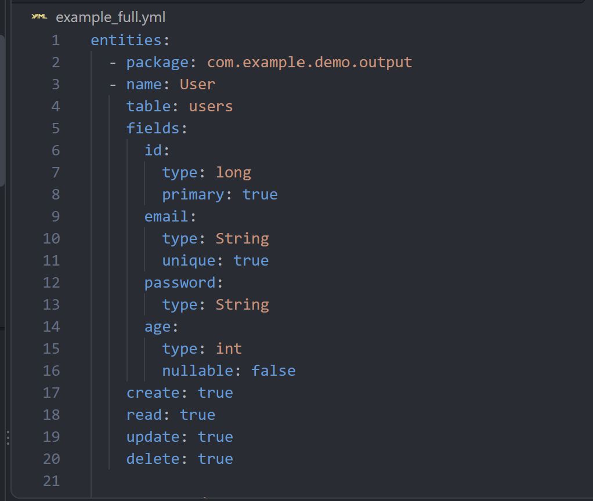
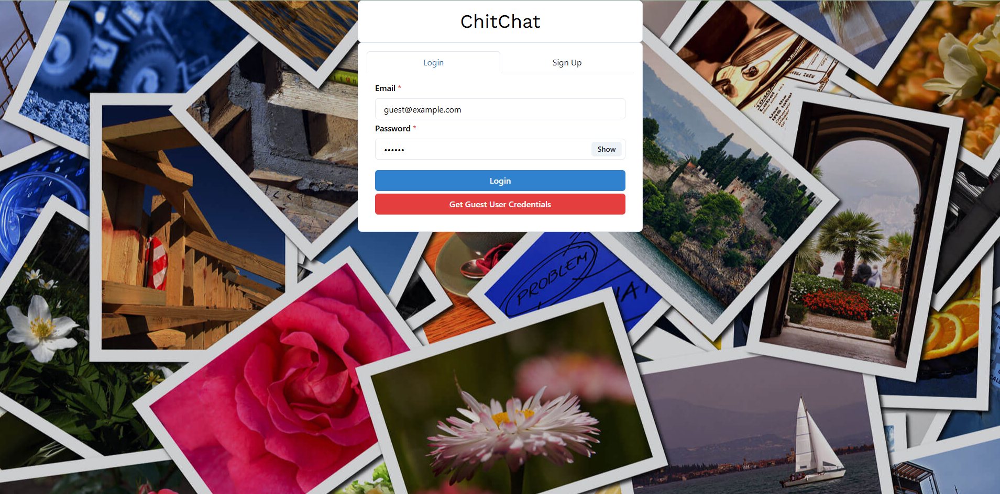

SpecGen
A REST API that turns YAML specs, or a plain-English description, into a full Java Spring Boot project you can download as a ZIP.
- Java 21
- Spring Boot
- PostgreSQL
- FreeMarker
- IBM watsonx
Hi, I'm Noah Cardoso, a software engineering student at McMaster University in Hamilton, ON. I've worked on CRM data tools, automated testing, and compiler development, and I enjoy backend systems, APIs, and the tooling that makes developers faster.
I'm looking for spring and summer 2027 software engineering internships! If you'd like to work together, get in touch.

A REST API that turns YAML specs, or a plain-English description, into a full Java Spring Boot project you can download as a ZIP.

A real-time chat app with secure login, built to handle 50+ concurrent users with sub-100ms message delivery.
Pillar To Post Home Inspectors, Remote
Pillar To Post Home Inspectors, Remote
McMaster Research (Drasil Project), Hamilton, ON